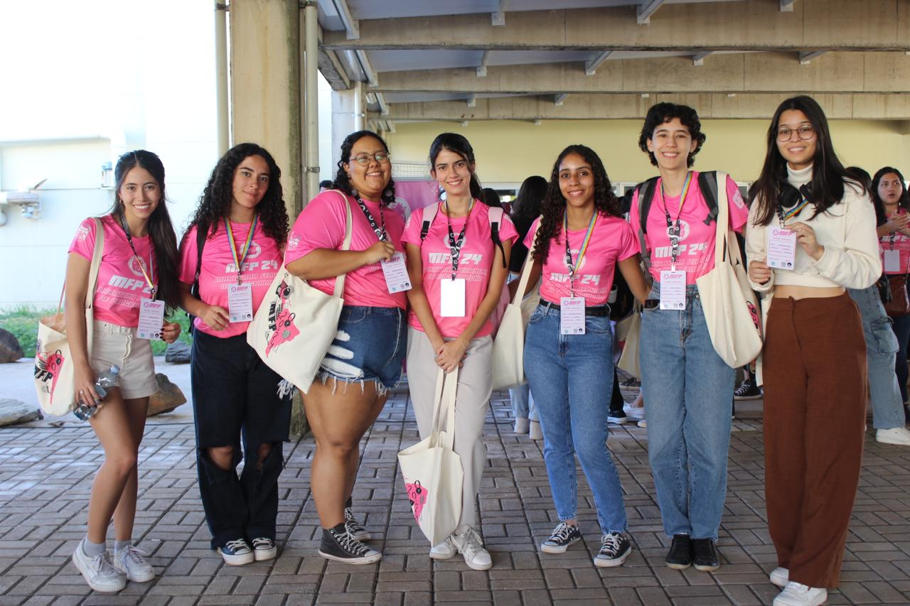

Bem vinda!
Fico feliz pelo seu interesse em programação competitiva! Abaixo você encontra algumas informações sobre esse universo.
Informações básicas
As maratonas de programação são competições similares às olimpíadas científicas: dado uma prova e um tempo determinado, os competidores lutam para fazer o maior número de questões possíveis. Mas, ao contrário das olimpíadas, as maratonas são um pouquinho mais práticas: a dificuldade está em, além de solucionar os problemas, programar as soluções corretamente!
Abaixo há algumas informações gerais sobre as competições:
Quanto tempo dura a competição?
Depende! Mas a maioria dura de três a cinco horas.
Quais matérias caem?
As provas são compostas por problemas de lógica e algoritmos.
Onde ocorre a prova?
A competição mais famosa possui 4 fases: regional, nacional, latino-americana e mundial. Cada ano a prova ocorre em um local diferente!
Porque participar?
É uma maneira divertida de testar seu raciocínio lógico e se desafiar. Além de poder viajar e conhecer pessoas novas :)
As competições nos fazem aprofundar em temas de matemática e computação, mas de uma forma divertida e com oportunidades incríveis de viajar e conhecer novas pessoas. A foto abaixo mostra eu e algumas amigas que eu fiz durante essa jornada, em uma maratona feminina em campinas.
Talvez, depois de ler essas informações, você esteja pensando que é necessário muito conhecimento técnico para começar a competir... mas eu vou te mostrar que não! Todas nós começamos de algum lugar, e existem problemas para todos os níveis de conhecimento. Nas próximas seções vou te apresentar um probleminha simples que você com certeza conseguiria resolver.
Problema da melancia
O problema da melancia é um problema iniciante clássico, que funciona da seguinte maneira:
Problema:
Pense que você está em um dia ensolarado e deseja dividir uma melancia com uma amiga para se refrescar. Entretanto, vocês não querem ser egoístas, por isso precisam dividir a melancia exatamente no meio, para que cada uma coma a mesma quantidade. Além disso, por algum motivo vocês querem partir a melancia em pedaços com tamanhos inteiros, ou seja, não é possível que cada uma fique com um pedaço de 10.5 cm de tamanho, por exemplo, uma vez que isso é um número fracionado.
Tarefa:
Sua tarefa é, dado um número "n" que representa o tamanho de melancia, decidir se você consegue dividi-la em dois pedaços que respeitem as condições dadas.
A maior parte das questões de programação competitiva tem a estrutura acima. Primeiro, há uma contextualização, uma "historinha" que envolve o problema que você vai resolver. Depois, eles te dão sua tarefa de fato. Nesse caso, a questão te dará vários tamanhos de melancia, e a gente precisa decidir se conseguimos dividir a melancia dada respeitando as condições do problema.
Se você pensar um pouquinho, vai perceber que se o problema te der uma melancia de tamanho ímpar, é impossível partir em dois pedaços iguais e inteiros. Mas, se o problema te der uma melancia de tamanho par maior ou igual a dois, nós sempre conseguimos dividir respeitando as condições dadas.
Agora que nós sabemos como resolver o problema, nós precisamos escrever um programa que execute nossa solução! E isso é bem simples: o programa vai receber um tamanho de melancia "n" e vai retornar se esse tamanho respeita as propriedades que a gente quer, ou não. Nosso código ficaria mais ou menos assim:
Solução:
Se n>=2 e n for par: retorne "consigo partir a melancia".
Caso contrário retorne "não consigo partir a melancia"
Como treinar?
Se você se interessou pelo tema e gostaria de começar a praticar, vou te dar algumas dicas. No final vou deixar alguns links de sites úteis nesse início.
1- Escollha uma lingugagem
Para começar a treinar, é preciso primeiro escolher uma linguagem de programação. As mais comuns nas competições são C, C++, Java e Python. Se você ja sabe alguma dessas, ótimo! Se não, eu te recomendo escolher uma para aprender. A que eu mais gosto de usar, e a que eu te recomendaria, é C++.
2- Treine problemas clássicos
Após ter aprendido o básico de uma lingugagem de programação, você já está apta a treinar alguns probleminhas comuns. Existem diversos temas básicos para começar que estarão disponíveis nos links no final.
3- Simule provas antigas
Por fim, para treinar velocidade e se acostumar com o estilo de prova, nada melhor do que simular provas antigas.
Links úteis:
Se você quer aprender a programar do zero:
Neps AcademySe você quer aprender temas novos e fazer problemas clássicos:
BeecrowdSe você quer simular provas antigas:
CodeforcesCompetições
Existem muitas competições de programação, a maioria focada em um público universitário. Mas duas competições muito famosas que podem ser realizadas por estudantes do ensino médio são a OBI (Olimpíada Brasileira de Informática) e a MFP (Maratona Feminina de Programação).
Contato
Gostou desse universo? Tem alguma dúvida? Pode me chamar no email!
lailamvl@gmail.com